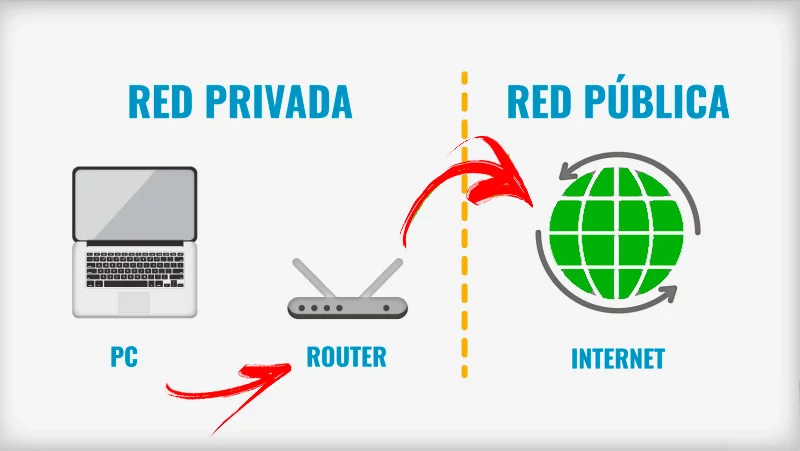

Tipos de direcciones IP
Direcciones IP
Cada individuo o empresa con un plan de servicio de Internet tendrá dos tipos de direcciones IP: sus direcciones IP privadas y su dirección IP pública. Los términos “pública” y “privada” se relacionan con la ubicación de la red, es decir, una dirección IP privada se utiliza dentro de una red, mientras que una pública se utiliza fuera de ella.
Direcciones IP privadas
Cada dispositivo que se conecta a tu red de Internet tiene una dirección IP privada. Esto incluye computadoras, teléfonos y tablets, pero también cualquier dispositivo que pueda conectarse mediante Bluetooth, como los altavoces, impresoras o televisores inteligentes. Con el creciente Internet de las cosas, la cantidad de direcciones IP privadas que tienes en casa probablemente está aumentando. El enrutador necesita una forma de identificar estos artículos por separado y muchos necesitan una forma de reconocerse entre sí. Por lo tanto, tu enrutador genera direcciones IP privadas que son identificadores únicos para cada dispositivo que los diferencian dentro la red.
Direcciones IP públicas
Una dirección IP pública es la dirección principal asociada a toda la red. Si bien cada dispositivo conectado tiene su propia dirección IP, también se incluyen en la dirección IP principal de la red. Como se describió anteriormente, tu ISP proporciona la dirección IP pública de tu enrutador. Normalmente, los ISP tienen un gran conjunto de direcciones IP que distribuyen a sus clientes. Tu dirección IP pública es la dirección que todos los dispositivos fuera de tu red de Internet utilizarán para reconocer tu red.
Direcciones IP dinámicas
Las direcciones IP dinámicas cambian de forma automática y con regularidad. Los ISP compran un gran grupo de direcciones IP y las asignan automáticamente a sus clientes. De forma periódica, reasignan y devuelven las direcciones IP más antiguas al grupo para que las utilicen otros clientes. La explicación detrás de esta estrategia es generar ahorros para el ISP. Automatizar el movimiento regular de las direcciones IP significa que no es necesario realizar acciones específicas para restablecer la dirección IP de un cliente, por ejemplo, si se muda de casa. También existen beneficios de seguridad, ya que una dirección IP cambiante facilita a los delincuentes el pirateo de la interfaz de red.
Direcciones IP estáticas
Por el contrario, las direcciones IP estáticas son siempre las mismas. Una vez que la red asigna una dirección IP, esta permanece igual. La mayoría de las personas y empresas no necesitan una dirección IP estática, pero para las empresas que planean alojar su propio servidor, es fundamental tener una. Esto se debe a que una dirección IP estática garantiza que los sitios web y las direcciones de correo electrónico vinculados tengan una dirección IP constante, lo que es vital si desea que otros dispositivos puedan encontrarlos de manera predecible en la Web.
